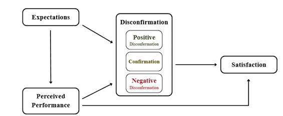
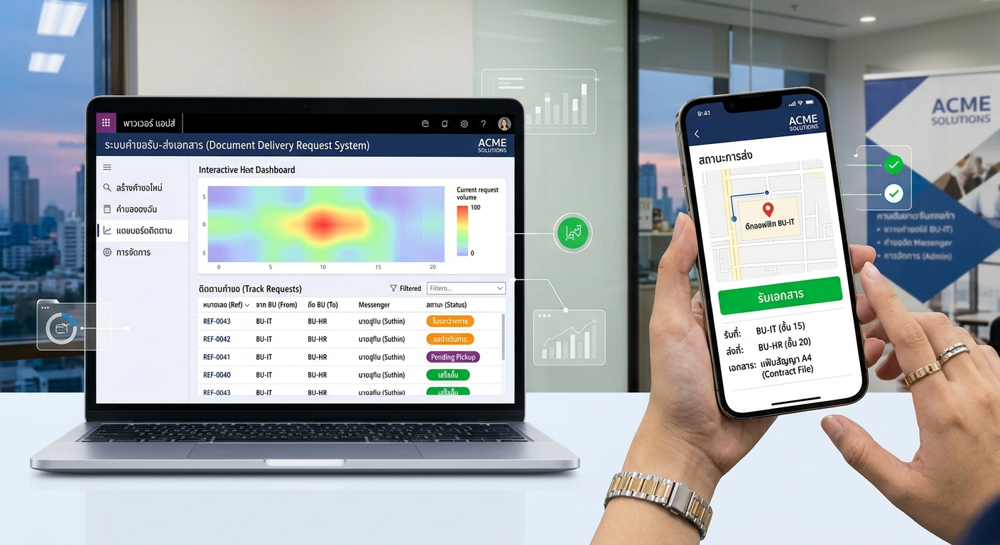
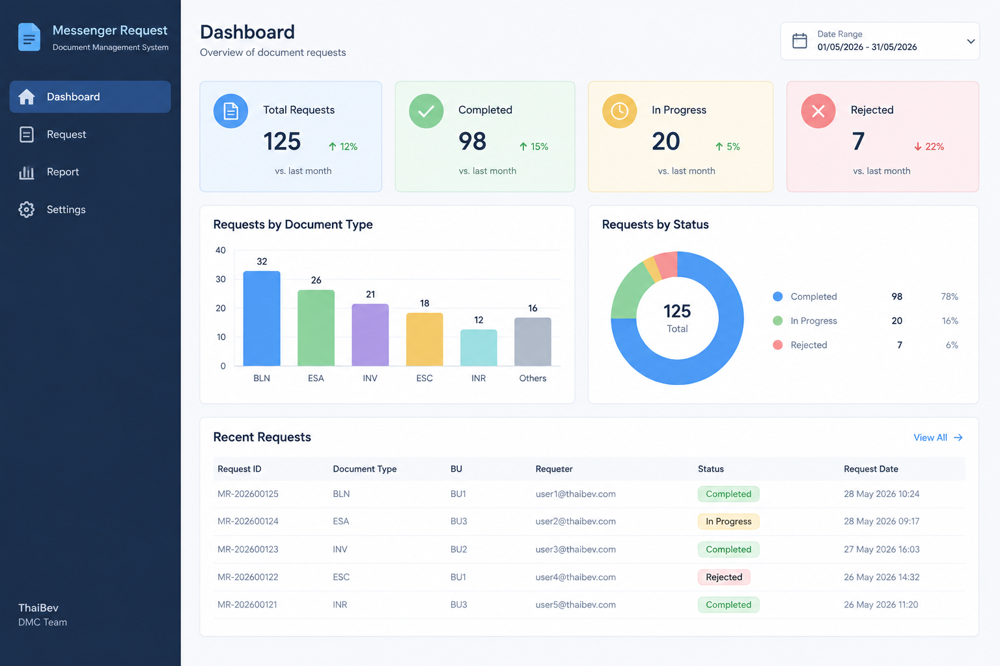

Senior Project
ศึกษาพฤติกรรมการค้นหาข้อมูลของมนุษย์โดยการสร้างแบบจำลองPLS – SEM อ้างอิงจากทฤษฎีการยืนยันความคาดหวัง
- HTML
- Pavlovia
- RStudio
โครงงานที่เคยมีส่วนร่วมในการพัฒนา

ศึกษาพฤติกรรมการค้นหาข้อมูลของมนุษย์โดยการสร้างแบบจำลองPLS – SEM อ้างอิงจากทฤษฎีการยืนยันความคาดหวัง

พัฒนาแอปเพื่อช่วยในการจัดการคำขอรับ–ส่งเอกสารระหว่าง BU และ Messenge ให้เป็นระบบ

พัฒนา Dashboard เพื่อรวบรวม วิเคราะห์ และนำเสนอข้อมูลในรูปแบบ Interactive Dashboard